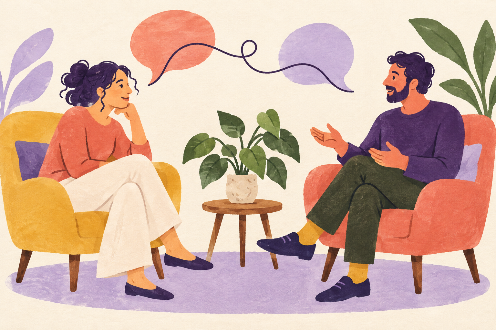

Tapahtumat
Avoimia kohtaamisia, yhteisiä teemapäiviä ja uusia tuttavuuksia. Tule tutustumaan yhdistykseen ja sen toimintaan.
0 €/ avoin tapahtuma
Yhdessä omalla alueella · Pilke ry
Pilke ry on paikka uusille ideoille ja yhteiselle tekemiselle. Tule tapahtumaan, kokeile työpajaa tai tuo oma ajatuksesi mukaan.
Tutustu toimintaan
Toiminta ja osallistuminen
Osallistu tapahtumaan, kokeile työpajaa tai liity jäseneksi. Yhdessä löydämme jokaiselle sopivan tavan olla mukana.
Avoimia kohtaamisia, yhteisiä teemapäiviä ja uusia tuttavuuksia. Tule tutustumaan yhdistykseen ja sen toimintaan.
Kokeillaan, opitaan ja tehdään yhdessä. Ohjattuun työpajaan voi tulla mukaan myös ilman aiempaa kokemusta.
Jäsenenä tuet yhdistyksen toimintaa ja pääset vaikuttamaan siihen. Osallistu tekemiseen tai tue yhteistä työtä taustalla.
Esimerkkimaksut. Tapahtumat ja jäsenyyden ehdot ovat kuvitteellisia.
Moikka!
Pilke ry
Yhteistä tekemistä
Kuvitteellinen yhdistys
Meidän yhdistyksemme
Olemme paikallinen yhdistys, jossa ihmiset tekevät yhdessä itselleen tärkeitä asioita. Toimintamme syntyy jäsenten ideoista ja halusta osallistua.
Voit osallistua tapahtumiin, tulla mukaan järjestämään tai tukea toimintaa jäsenenä. Kaikkea ei tarvitse osata etukäteen: tekemällä ja yhdessä oppien pääsee alkuun.
Pilke ry
Kuvitteellinen yhdistys ja toimintakuvaus.
Näin pääset mukaan
Katso, millaisia tapahtumia ja työpajoja järjestämme. Voit kysyä lisää ennen osallistumista.
Valitse kiinnostava tapahtuma tai työpaja. Kerromme ilmoittautumisesta ja käytännön järjestelyistä.
Jäsenenä voit ehdottaa uutta, osallistua järjestämiseen ja vaikuttaa yhdistyksen toimintaan.
Hyvä tietää
Kysy lisää, jos jokin asia jäi mietityttämään.
Tässä esimerkissä avoimeen tapahtumaan voi osallistua ilman jäsenyyttä. Työpajojen ilmoittautumisohjeet ja mahdolliset maksut kerrotaan erikseen.
Oikealla sivustolla tapahtuman tiedoissa olisi ilmoittautumislinkki tai yhteyshenkilö. Tässä mallissa ilmoittautumista ei tehdä.
Jäsenenä tuet toimintaa ja pääset vaikuttamaan yhteisiin asioihin. Mallin vuosimaksu on esimerkki; oikean yhdistyksen ehdot kerrotaan sen omilla sivuilla.
Kyllä. Yhdistyksen toiminta voi syntyä myös jäsenten ehdotuksista. Oikealla sivustolla voitaisiin kertoa, kenelle ideat lähetetään.
Tule mukaan
Haluaisitko osallistua, liittyä jäseneksi tai ehdottaa yhteistyötä? Tutustu siihen, miten toimintaan voisi päästä mukaan.
Kuvitteellinen esimerkki · Malli ei lähetä viestejä
Pilke ry
hei@pilke.example · 040 000 0000
Kuvitteelliset yhteystiedot
Esimerkkikatu 8, 00100 Helsinki
Tapaamiset sopimuksen mukaan
Yhteistä tekemistä omalla alueella